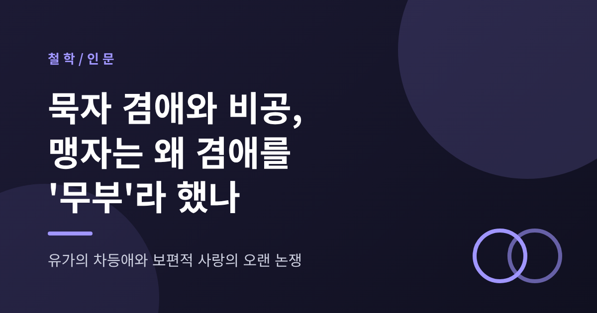
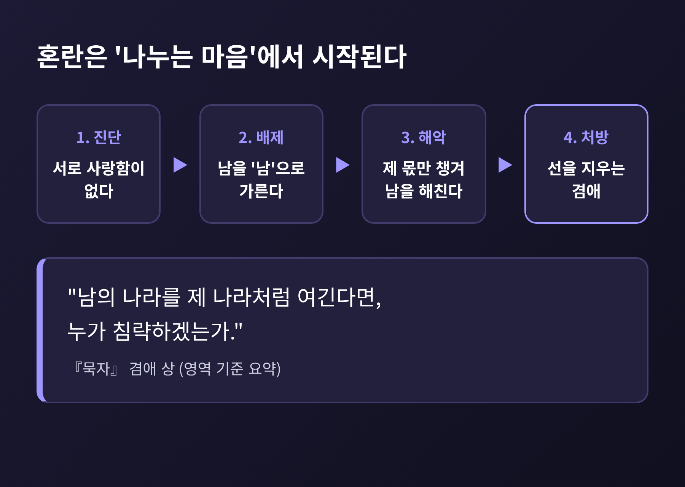
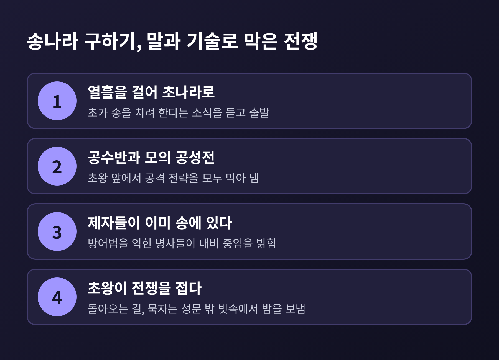
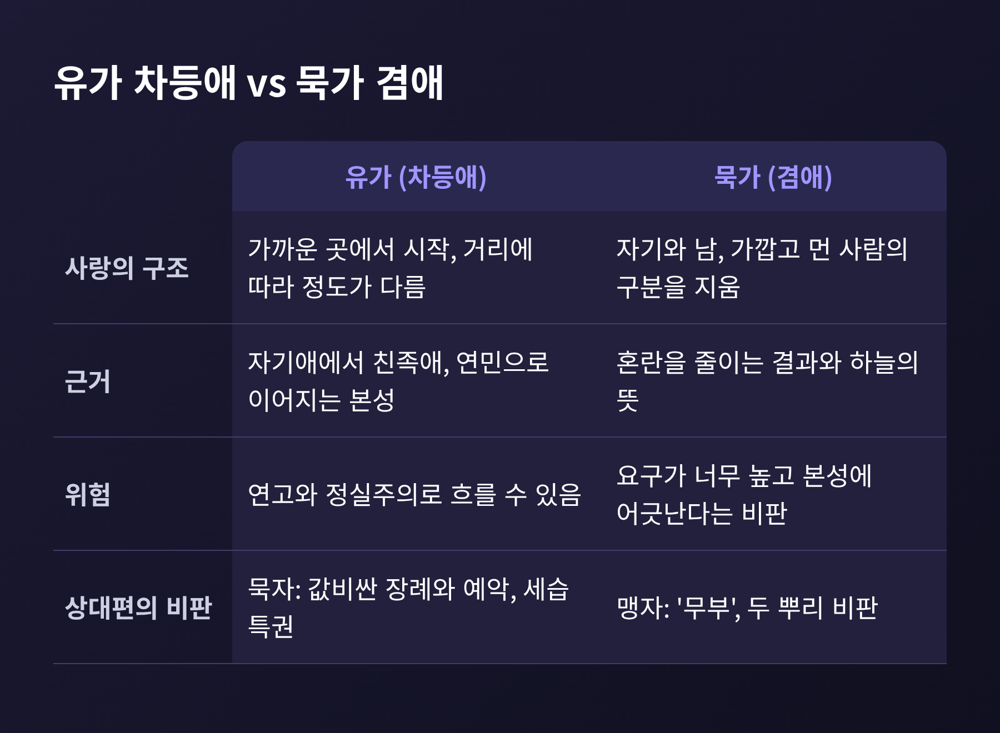
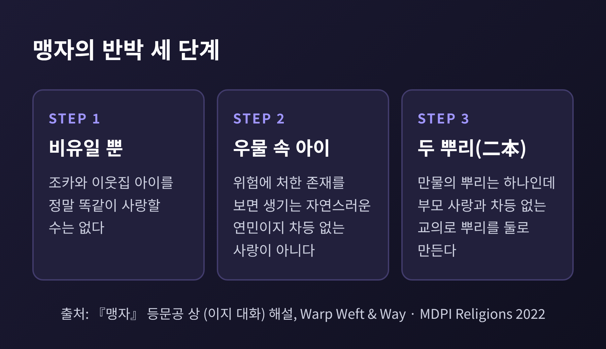
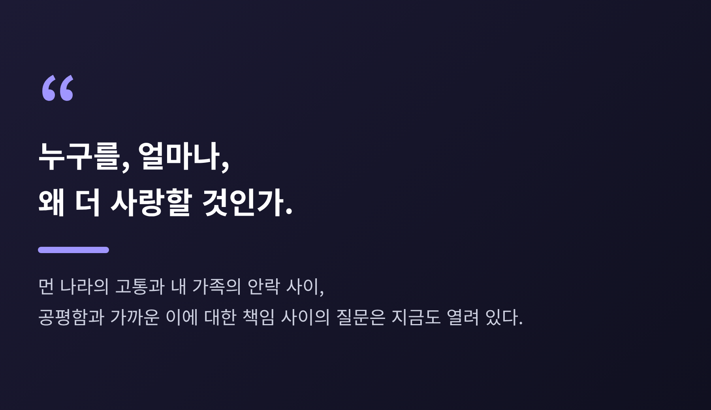

오늘은 묵자의 겸애(兼愛)와 비공(非攻)을 다뤄 보려 합니다. 유가의 차등적 사랑과 무엇이 달랐는지, 맹자가 겸애를 왜 '아비 없는 것(무부, 無父)'이라 불렀는지를 차례로 살펴보겠습니다. 끝에서는 이 오래된 논쟁이 오늘의 보편적 윤리 논쟁에 어떤 질문을 던지는지 짚어 보겠습니다.
세 줄로 먼저 요약해 둡니다.
묵자는 공자의 뒤를 이어 나타난 유가의 첫 주요 라이벌로 꼽힙니다. 활동 시기는 대체로 기원전 5세기 후반에서 4세기 초로 봅니다. 생몰 연대는 자료마다 다릅니다. 대략 기원전 470년에서 390년으로 보는 설이 있고, 479년에서 381년으로 보는 논문도 있습니다. 확정하기는 어렵습니다.
출신은 하층 장인 계층이었고, 뛰어난 기술자였다고 전해집니다. 그를 따르는 무리도 기술자와 장인이 중심이었습니다. 우두머리는 거자(鉅子)라 불렸고, 구성원은 훈련을 받고 규율을 지켰습니다. 『장자』는 이들이 자기희생을 최고로 삼았다고 적었습니다.
이 집단이 내세운 핵심 주장이 열 가지입니다. 현자 존중, 윗사람과의 일치, 겸애, 비공, 절약, 간소한 장례, 하늘의 뜻, 귀신의 존재, 음악 비판, 운명론 비판입니다. 겸애와 비공은 그중에서도 가장 널리 알려진 한 쌍입니다.
겸애는 흔히 '보편적 사랑'으로 옮깁니다. 정의는 간단합니다. 자신과 타인, 가까운 사람과 낯선 사람을 구분하지 않고 타인의 복지를 살피라는 것입니다.
묵자의 논증은 의사의 진단에서 출발합니다. 의사가 병을 고치려면 먼저 병의 원인을 알아야 하듯, 통치자도 세상이 어지러운 원인을 알아야 한다는 것입니다. 『묵자』는 그 원인을 '서로 사랑함이 없는 것'이라 진단합니다.
자식은 자기만 사랑하고 아버지는 사랑하지 않아 아버지를 해칩니다. 신하와 군주, 도둑과 피해자, 제후국과 제후국의 관계도 같습니다. 각자 제 몫만 챙기면서 남을 해치게 된다는 논리입니다. 그래서 이런 구절이 나옵니다.
"남의 나라를 제 나라처럼 여긴다면, 누가 침략하겠는가."
여기서 남을 '남'으로 갈라놓는 배제의 태도가 해악의 뿌리라는 주장이 나옵니다. 처방은 그 선을 지우는 것입니다.
묵자는 이 주장을 감상으로 펴지 않았습니다. 결과를 따졌습니다. 천하의 근심이 편파에서 나오니, 겸애가 폭력과 충돌을 줄인다는 것입니다. 하늘의 뜻과도 부합한다고 보았습니다. 이 사상의 바탕에는 백성이 겪는 세 가지 고통, 곧 굶주림과 헐벗음과 쉬지 못함을 해결하겠다는 목표가 깔려 있습니다.
한 가지 짚어 둘 점이 있습니다. 겸애를 '모두를 똑같이 대우하라'는 요구로만 읽으면 오해가 생깁니다. 스탠퍼드 철학 백과의 해석에 따르면, 겸애는 모두에게 포괄적인 관심을 갖되, 이로운 행동은 실제로 마주하는 사람에게 향하는 태도에 가깝습니다. 요구하는 것도 자기희생이 아니라 서로 이롭게 하는 관계, 곧 교상리(交相利)에 더 가깝다고 합니다. 다만 이 해석을 두고도 학자마다 의견이 갈립니다.

비공은 침략전쟁에 반대한다는 뜻입니다. 논리는 단순하고 날카롭습니다. 침략은 절도, 강도, 살인과 같은 이유로 그르다는 것입니다. 해악이 클수록 불의도 더 크다는 점에서, 나라 단위의 침략은 큰 잘못이 됩니다.
여기에 실리 계산이 더해집니다. 침략하는 쪽도 경제적, 인명 피해를 크게 입습니다. 이득을 보는 경우는 수많은 환자 가운데 네댓 명을 고친 약처럼 예외에 불과하다는 것입니다.
그렇다고 묵가가 평화주의자였던 것은 아닙니다. 이들은 강한 방어력이 나라의 생존에 핵심이라고 보았습니다. 포위된 도시에 달려가 돕는 전문가들이 있었고, 『묵자』 후반부에는 방어 전술과 성곽 축조 기록이 남아 있습니다. 공격은 막고 방어는 돕는다. 이것이 비공의 실제 모습이었습니다.
대표적인 일화가 송나라 구하기입니다. 초나라가 송나라를 치려 한다는 소식을 듣고, 묵자는 열흘을 걸어 초나라로 갔다고 전합니다. 초왕 앞에서 공성 기술자 공수반과 모의 전투를 벌였고, 공수반의 공격을 모두 막아 냈습니다. 공수반이 그를 죽이겠다고 위협하자, 묵자는 제자들이 이미 송나라에서 방어법을 익힌 병사들과 함께 있다고 답했습니다. 초왕은 결국 전쟁을 접었습니다.
일화에는 쓸쓸한 끝이 붙어 있습니다. 돌아오는 길에 송나라 병사들이 묵자를 알아보지 못해 성문에 들이지 않았고, 그는 빗속에서 밤을 보냈다고 합니다. 나라를 구한 사람이 문밖에서 비를 맞았다는 대목입니다. 다만 이 일화는 후대에 정리된 기록이라는 점을 감안해 읽어야 합니다.

유가의 사랑은 가까운 곳에서 시작합니다. 가족을 먼저 아끼고, 거리가 멀어질수록 정도가 달라지는 구조입니다. 흔히 존비친소의 차등이라 부릅니다. 묵자는 이 구조에서 문제를 보았습니다. 사랑에 선이 그어지면 그 선 바깥의 사람을 해쳐도 된다는 논리로 번질 수 있다고 본 것입니다. 묵자가 유가의 값비싼 장례와 예악, 세습 특권을 비판한 것도 같은 맥락입니다.
유가에서는 반대로 이렇게 답할 수 있습니다. 차등애는 자기애에서 부모에 대한 사랑으로, 다시 타인에 대한 연민으로 이어지는 연속선이라는 것입니다. 중국 학자 리징린은 맹자의 사랑이 자기애와 자연스러운 동정이라는 두 극 사이에 친족애를 놓는 구조라고 분석합니다. 친족애는 차등적이면서도 보편성의 씨앗을 품는다는 설명입니다.
두 입장의 차이를 표로 비교하면 이렇습니다.

맹자 「등문공 하」는 이렇게 말합니다. 양주와 묵적의 말이 천하에 가득하다. 양주는 자기만을 위하니 임금이 없는 것이고, 묵적은 겸애를 하니 아버지가 없는 것이다. 아비도 임금도 없으면 짐승이다. 말은 거칠지만, 그 안에 철학적 쟁점이 들어 있습니다.
이 비판을 두 갈래로 읽는 학자들이 있습니다. 하나는 '생활 방식' 해석입니다. 묵가가 실제로 가족을 소홀히 한다는 비판이라는 것입니다. 다른 하나는 '태도' 해석입니다. 겸애 교의가 요구하는 마음가짐 자체가 부모를 특별히 대하는 마음과 충돌한다는 비판입니다.
더 흥미로운 장면은 「등문공 상」의 이지(夷之) 대화입니다. 묵가인 이지는 부모의 장례를 후하게 치렀습니다. 간소한 장례를 말한 묵자의 가르침과 어긋나는 행동입니다. 맹자가 이를 지적하자, 이지는 이렇게 변명합니다. 사랑에는 차등이 없지만, 실천은 부모에게서 시작한다는 것입니다. 옛사람이 백성을 갓난아이 돌보듯 했다는 비유도 곁들였습니다.
맹자의 반박은 세 단계입니다.
첫째, 그 말은 비유일 뿐입니다. 조카와 이웃집 아이를 정말 똑같이 사랑할 수는 없다는 것입니다. 둘째, 우물로 기어가는 아이를 보면 누구나 놀라 구하려 하는데, 그것은 보편적 사랑이 아니라 위험에 처한 존재에 대한 자연스러운 연민입니다. 셋째, 하늘은 만물을 낳되 뿌리를 하나로 두었는데 이지는 뿌리를 둘(이본, 二本)로 만든다는 것입니다. 하나는 마음에서 우러나는 부모 사랑, 다른 하나는 차등 없는 사랑이라는 교의입니다.
이 '두 뿌리' 비판의 해석도 단일하지 않습니다. 조기는 이지가 자기 부모와 남의 부모를 동일시한 점을 문제 삼았다고 봅니다. 주희는 차등 없는 사랑 자체가 두 뿌리라고 보았고, 차등애는 한 뿌리에서 자라는 것이라 두 뿌리가 아니라고 했습니다. 그레이엄은 모두에 대한 동등한 관심과 가족에 대한 더 큰 배려 사이의 긴장으로 읽습니다. 니비슨은 마음과 마음에 닿지 않는 교의 사이의 갈등으로 봅니다. 한 연구는 이지의 딜레마에 아직 만족스러운 답이 없다고 결론 짓습니다.
브라이언 반 노든이 정리한 맹자의 핵심 논거는 인간 본성입니다. 본성이 사람이 현실적으로 따를 수 있는 도의 범위를 정하며, 낯선 이를 가족만큼 돌보라는 이상은 그럴듯하지 않다는 것입니다. 그러나 맹자는 본성을 이기심으로만 보지 않았습니다. 타인의 고통에 대한 연민과 부끄러움도 본성에 속한다고 보았습니다.
공정하게 말씀드리면, 이 비판이 묵가의 취지를 제대로 겨냥했는지는 지금도 논쟁거리입니다. 앞서 본 대로 겸애가 가까운 이에 대한 더 큰 책임을 부정하지 않는다는 해석이 있기 때문입니다.

묵가와 맹자의 논쟁은 오늘의 윤리학 용어로도 옮겨집니다. 한 연구는 맹자의 입장을 의무론적, 묵가의 입장을 결과주의적이고 행위자 중립적이라고 설명합니다. 스탠퍼드 백과는 묵가 결과주의가 벤담이나 밀과 달리 행복 하나가 아니라 부, 인구, 사회 질서 같은 여러 선을 함께 추구했다고 봅니다.
이 구도에서 오늘의 질문이 나옵니다. 먼 나라 사람의 고통과 내 가족의 안락 사이에서 우리는 어디까지 공평해야 하는가. 이른바 '요구 과잉' 반론이 겨냥하는 지점입니다. 묵자의 요구는 이미 고대에도 너무 높다는 평을 들었습니다. 『장자』에도 그 취지의 대목이 있다고 합니다.
반대편에는 다른 위험이 있습니다. 한 연구가 지적하듯, 차등애와 보편애는 논리적으로 맞물린 짝이 아닙니다. 차등애는 연고와 정실주의로 흐를 수 있습니다. 가까운 사람을 챙기는 마음이 공적 영역으로 번지면 불공정이 됩니다. 한편 비인격적 관점만으로는 개인의 자리를 설명하지 못한다는 비판도 있습니다.
비공은 또 다른 질문을 던집니다. 침략을 반대하면서 방어는 어떻게 인정할 것인가. 묵가는 주는 쪽이 아니라 막는 쪽에 선다는 기준을 택했고, 그 기준을 말에 그치지 않고 몸으로 실천했습니다. 이 점은 오늘의 전쟁 정당성 논의에서도 참고할 만합니다.

정리하면 이렇습니다. 묵자는 사랑의 범위를 넓히는 데서, 맹자는 사랑이 자라는 방향을 지키는 데서 사람다움의 근거를 찾았습니다. 한쪽은 선을 지우자 했고, 한쪽은 선이 있어야 사랑이 자란다고 했습니다.
"누구를, 얼마나, 왜 더 사랑할 것인가." 이천사백 년 넘게 이어진 이 물음에 정답은 아직 없습니다. 다만 가까운 이를 아끼는 마음이 낯선 이에게 문을 닫는 구실이 되지는 않는지, 낯선 이를 위한다는 말이 곁의 사람을 외면하는 변명이 되지는 않는지 돌아보는 일은 지금도 쓸모가 있다고 생각합니다. 묵자와 맹자 가운데 어느 쪽에 서시겠습니까. 어느 쪽을 택하든, 그 선택의 이유를 스스로 설명할 수 있어야 할 것입니다.